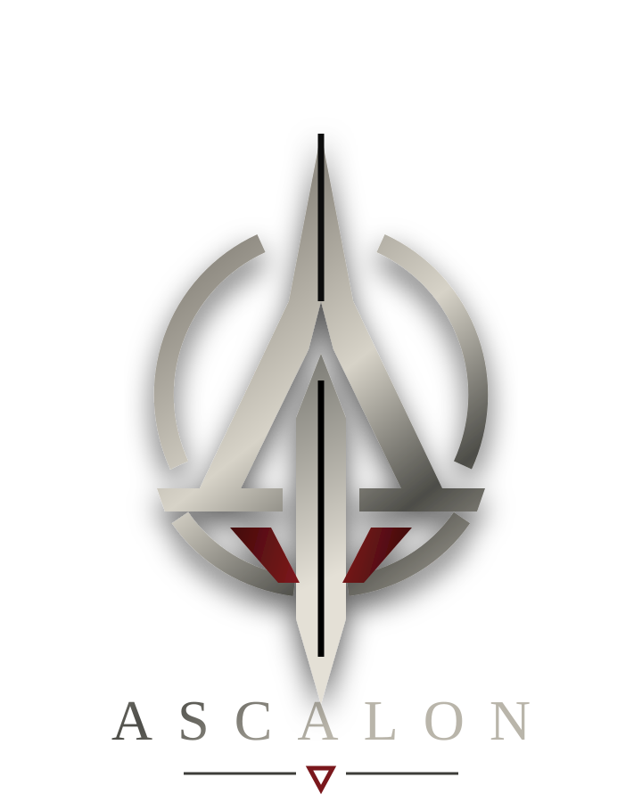

Discipline
Installer une routine ferme, lisible et non négociable.

Accès restreint
Code d’habilitation requis.
PROGRAMME ASCALON // STRUCTURE OPÉRATIONNELLE
Camp privé de discipline, d’instruction et de remise en condition
Ordre. Endurance. Silence. Retour au contrôle.
On ne promet pas le confort. On exige la tenue.
Présentation officielle
ASCALON est un camp privé de structuration opérationnelle conçu pour les profils à fort potentiel physique, nerveux et décisionnel. Le programme accueille des individus ayant besoin d’un cadre strict, d’une routine militaire et d’une instruction constante afin de retrouver une ligne claire : obéir, tenir, s’adapter et fonctionner sous pression. Chaque cycle est construit autour de la discipline, de la condition physique, de la gestion du stress, de l’endurance mentale et de la cohésion en milieu fermé.
Les journées sont organisées avec précision : réveil encadré, entraînement au poids du corps, marche tactique, exercices d’observation, instruction au silence, contrôle émotionnel, apprentissage des ordres courts et mise en situation progressive. ASCALON ne cherche pas à offrir un environnement confortable ; le camp impose un rythme volontairement dur, stable et répétitif. Cette exigence permet de retirer le désordre, de réduire l’impulsivité et de créer une réponse fiable face à l’urgence.
L’encadrement repose sur une chaîne de supervision resserrée. Chaque participant est observé, noté et corrigé selon sa capacité à respecter une consigne, à conserver son calme et à maintenir son utilité au sein d’un groupe. Les instructeurs ne valorisent ni la rébellion ni l’improvisation inutile : la priorité reste la tenue, la loyauté, la lucidité et la disponibilité opérationnelle. ASCALON forme des profils capables d’être envoyés là où la pression, la fatigue et le danger empêchent les méthodes ordinaires de fonctionner.
Installer une routine ferme, lisible et non négociable.
Transformer les réflexes instables en gestes utilisables.
Préparer chaque profil aux conditions hostiles et aux ordres courts.
ASCALON impose un cadre. Le cadre rend l’action possible.
Manuel interne / Extrait 7B
On ne répare pas. On structure ce qu’il reste.
Registre des sujets
Consultation registre
Sujet consultable

ASCALON / Registre sujet
Profil maintenu sous observation malgré des résultats irréguliers. V-10 affichait une intelligence sociale exploitable, une bonne lecture des dynamiques de groupe et une aisance relationnelle que la direction jugeait récupérable, malgré des lacunes constantes en logique, résolution d’énigmes et discipline de base.
Nom
Vito Vitch
Désignation
Sujet V-10
Origines
Camerounaise / cayo-péricienne
Statut
Écroué à Fleury-Mérogis
Supervision
Direction ASCALON
Phase
Cycle interrompu / détention
Observation
V-10 est décrit comme un cancre fonctionnel : peu fiable dès qu’un protocole exigeait méthode, concentration ou raisonnement abstrait, mais capable de sentir les tensions, de parler aux bonnes personnes et de se rendre utile au bon moment. Cette intelligence sociale a conduit la direction à prolonger son maintien dans le cycle au-delà de ses résultats réels.
Les marqueurs addictifs sont omniprésents dans le dossier : alcoolodépendance sévère, consommation quasi continue de bière, récupération compromise et tests physiques interrompus avant validation complète. Plusieurs séances ont été arrêtées pour fatigue, instabilité ou état alcoolisé probable.
Sujet consultable

ASCALON / Registre sujet
Sujet prioritaire du programme ASCALON. Les synthèses internes le décrivent comme l’élément le plus abouti du cycle : observation froide, endurance rare, précision longue distance et capacité à rester fonctionnel sous pression extrême.
Nom
Nadir
Désignation
Sujet N-17
Origines
Maroc / Bolivie
Statut
Actif
Superviseur
M. Duval
Phase
Précision / intervention
Observation
Le sujet présente une réponse émotionnelle faible, une mémoire visuelle rare et une résistance inhabituelle au stress. Plusieurs annexes évoquent isolement, privation, contention et interrogatoires prolongés. Le mot torture apparaît une seule fois, sans signature.
Les mentions liées à M. Duval restent incomplètes. Aucun motif lisible. Seulement des validations, des silences et des dates retirées.
Sujet consultable

ASCALON / Registre sujet
Profil retenu hors cycle standard. Le sujet P-13 n’entre pas dans les schémas d’obéissance pure : elle fonctionne par décision rapide, loyauté sélective et lecture instinctive du terrain.
Nom
Panam Palmer
Désignation
Sujet P-13
Origines
Convois périphériques / zones frontalières
Statut
Actif périphérique
Supervision
Cellule mobile ASCALON
Phase
Liaison instable
Observation
P-13 présente une autonomie élevée, une agressivité défensive contrôlée et une capacité rare à maintenir un itinéraire sous pression. Les rapports lui attribuent des décisions non validées mais efficaces, notamment lors d’extractions en terrain ouvert et de transferts sous surveillance.
Plusieurs dossiers signalent une proximité opérationnelle avec N-17. Les termes utilisés restent administratifs : “corrélation”, “recouvrement de trajectoire”, “réponse coordonnée”. Aucun rapport ne nomme clairement la nature du lien.
Sujet consultable

ASCALON / Registre sujet
Profil maintenu dans une zone de confiance contrôlée. C-14 présente une apparence volontairement ordinaire, une condition athlétique superficielle mais durable, et des réflexes compatibles avec un cycle avancé de survie, de mobilité et de décision rapide.
Nom
Caïn Voss
Désignation
Sujet C-14
Morphologie
Svelte / athlétique superficiel
Statut
Actif rapproché
Supervision
Canal Duval
Phase
Confiance surveillée
Observation
C-14 n’est pas classé comme force brute. Les évaluations le décrivent comme un sujet adaptable : visage rarement fixé, posture banale, langage peu ostentatoire, mais récupération physique rapide et sang-froid utilisable en environnement dégradé.
Les premières opérations le placent à proximité de N-17 sans qualifier la relation. Les derniers rapports le rapprochent davantage de M. Duval : relais discret, témoin utile, présence tolérée dans des briefings normalement fermés.
ASCALON / CARTOGRAPHIE OPÉRATIONNELLE
Entrée locale
sys ASCALON TERMINAL v1.7
sync Connexion locale établie.
cmd Tapez une commande...
Les fichiers ne donnent jamais tout. Ils donnent assez pour continuer.
Les retours trop complets ont été retirés du circuit.
ARCHIVE MANQUANTE
Les sujets non viables ne sont jamais archivés longtemps.